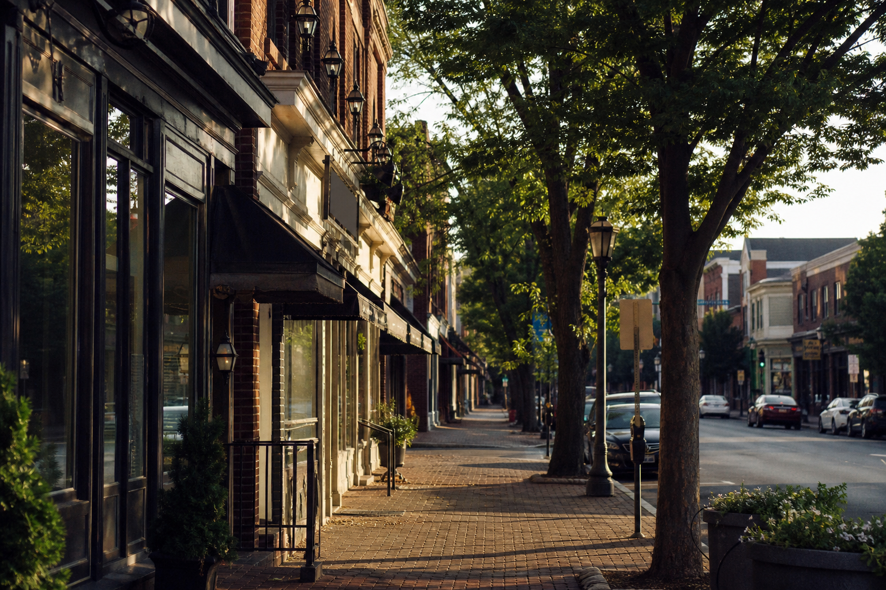

One grid, one measure, one kit that can move from a window to a bag to a phone. White space is a force, not leftover. If a mark cannot hold at three scales, it is not finished.

We help independent restaurants look as exceptional as the food they serve.
The first conversation is at your restaurant. Then identity, menus, windows, and the site become one place.
Method
One construction, many scales
The chrome of this site is a book: maroon rails, a black stage, gold as a rule. Type splits the labor — a serif for the sentence, a grotesque for the index. Color is relative. Gold on black reads as metal; gold on maroon reads as wine. We do not dress a pizza window in someone else’s century. Each brand keeps its own weather. The system is the studio. The costume stays off the work.
The display serif carries the line. The grotesque carries the catalog: numbers, labels, hours. Flush left. No costume alphabets. The restaurant already has a voice — we set it so a guest can read it at the pass.
A color is never alone. Heat against gold, cream against black, maroon as the margin of the book. Print still thinks in a few inks. We keep the palette short so the food can be loud.
Brands
Work that has to live in the world
Restaurant rooms first — pizza, a coastal table, coffee, deli, ice cream — including Bville Pizza & Grill in Bernardsville, where David was in-house graphic designer from 2018 to 2021. Construction, sleep, and Design + Build live with the rest of the brands.

Process
From the table to the street
Hospitality studios that last do the discovery on the property, write the story back, then design a system — not a pile of files. First conversations are rarely about logos. They are about the room, the guest, and what has to hold up at dinner rush.
01 · Sit down
Meet at the restaurant
We come to you. Eat, walk the room, stand at the window. The first conversation happens where the guest already is — not on a call that never sees the light.
02 · Write it back
What we heard
After the meal we send a short brief: who the guest is, what the block thinks, what the food already knows, and what has to live on glass. You correct it. We do not invent a brand you did not say.
03 · Draw
Research, then marks
We look at the street, the neighbors, and the history of the room. Then we draw — type, color, lockup — until the name can sit on a window and still feel like dinner. Clear messaging over clutter.
04 · Build
One kit, every surface
Menus, windows, the site, the bag. A modular system that can move without falling apart. Collaboration over ego. We stay until the room, the board, and the phone match.
Bernardsville, Morristown, Morris County
David Philhower designs for owners who want a local partner. The first meeting is at your restaurant — in Bernardsville, Morristown, or the next town over — not a distant mill that retrofits one layout for the next shop.
- Bernardsville · Morristown · Madison
- Mendham · Randolph · Chatham
- And surrounding Morris County

Let’s sit down
Invite us to the restaurant. We will eat, listen, and write back what we heard before we draw a line. If the food is already there, the look should catch up.
Invite the studio